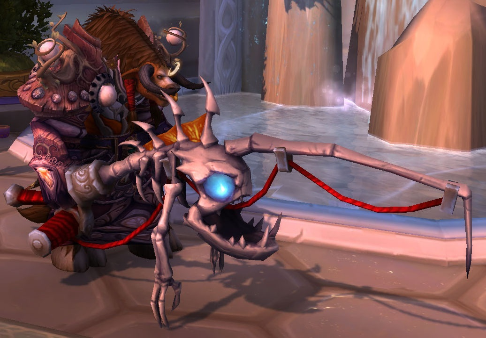

- wowhead
- wowdb
- thottbot
- wow-professions
Sources
Obtaining Underlight Angler
Prerequisites
The list of prerequisites is deceivingly short. You must:
- Be level 110
- Have level 800 fishing Not required but you will probably get it anyway
- Complete the achievement Bigger Fish to Fry
Reaching level 110 from 100 takes around 8-10 hours, depending on how quickly you complete quests and how easily you get distracted. You will easily reach max level fishing by completing the achievement. Neither of these will take a lot of time, and most players will naturally complete both.
...
Patch 7.0.3
Most relevant changes:
- The Stranglethorn Fishing Extravaganza has taken a temporary hiatus while the fish are restocked.
- The 5v5 Arena bracket has been retired. "Arena Master" achievement has been converted into a Feat of Strength.
- Master Tamers in Draenor now reward half as many Pet Charms as before.